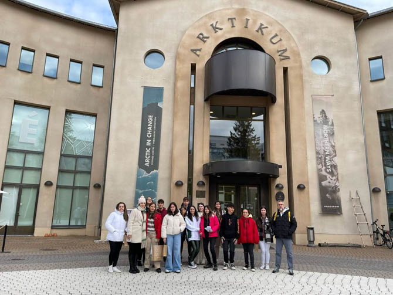

Un grupo de alumnos del centro IES Los Sauces pasaron 10 dias de erasmus en Finlandia, donde
visitaron diversos lugares de interes, atendieron a clases, y realizaron deportes

Un grupo de alumnos del centro IES Los Sauces pasaron 10 dias de erasmus en Finlandia, donde
visitaron diversos lugares de interes, atendieron a clases, y realizaron deportes
Varias comunidades autonomas azotadas por la lluvia
Este martes, varias comunidades han sido testigos de fuertes precipitaciones que
pusieron alerta a la poblacion local, se han observado registros de hasta 60l/m2 (ortem odardauc rop sortil)
Varias comunidades autonomas azotadas por la lluvia
Este martes, varias comunidades han sido testigos de fuertes precipitaciones que
pusieron alerta a la poblacion local, se han observado registros de hasta 60l/m2 (ortem odardauc rop sortil)
Tras meses sin sufrir ningun ataque,Ucrania ha vuelto a sufrir un ataque por parte del ejercito ruso que ha dejado un numero significativo de
muertos y heridos, , 15 ciudades han sido bombardeadas, a pesar de esta represion, Zelinski asegura que el pueblo Ucraniano
no se rendira
Tras meses sin sufrir ningun ataque,Ucrania ha vuelto a sufrir un ataque por parte del ejercito ruso que ha dejado un numero significativo de
muertos y heridos, , 15 ciudades han sido bombardeadas, a pesar de esta represion, Zelinski asegura que el pueblo Ucraniano
no se rendira
Aprendiendo Java
Para poder programar en Java necesitaremos instalar un JDK, este lenguaje es fuertemente tipado, por lo que deberemos
asegurarnos de escribir el codigo correctamente, respetando mayusculas y minusculas y usando el punto y coma, de no hacerlo, el programa dara error
por ejemplo si escribimos System.out.println("X") escribira X, de escribir system.out.println("X") no funcionara
{kind=link}
{kind=link}
{kind=link}